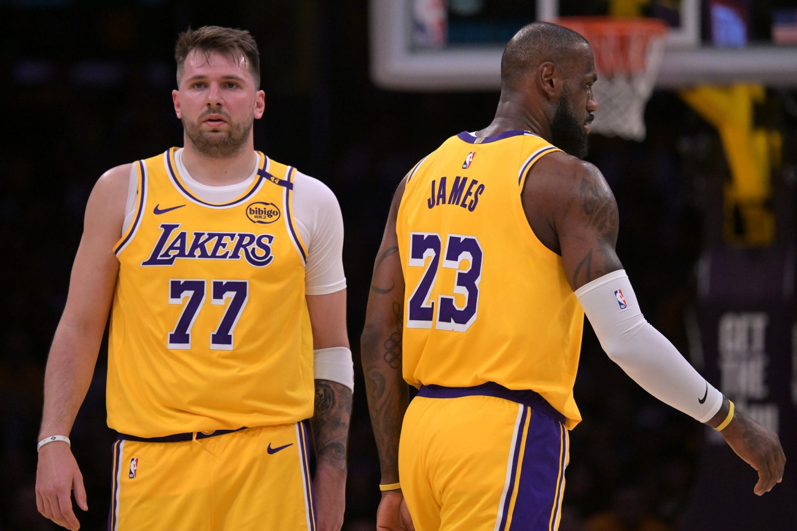
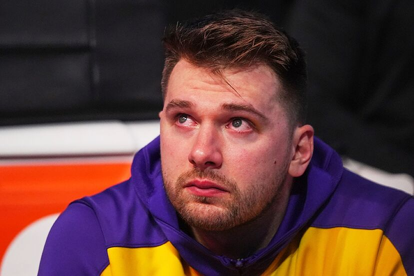

Datos extras.
El grupo no es el único que puede cerrar con una gran marca la campaña. Luka Doncic (26 años y 1,98 m) ha ganado 16 de los 25 partidos que ha jugado de púrpura y oro desde su debut el pasado 10 de febrero frente a Utah Jazz. Es un 64% de triunfos, el tercer mejor registro de su carrera tras el 67,6% de la temporada 2021-22 y el 65,7% de la 2023-24. En ambos casos como jugador de Dallas Mavericks, equipo del que fue traspasado a California.


Luka Doncic es una leyenda de los Dallas Mavericks, con todo y su sorpresiva salida del equipo donde se convirtió en figura en la NBA a Los Angeles Lakers. Aun cuando el canje generó una gran cantidad de críticas tanto a la gerencia de los Mavs por el acuerdo que consideraron profundamente desigual para ceder a su jugador franquicia.
Sin embargo, la afición de los Mavs lo sigue considerando un ídolo y esto quedó de manifiesto este miércoles, luego que Doncic volvió por primera vez a la que durante seis temporadas fuera su casa, el American Airlines Center, pero ahora enfundado en la franela púrpura y oro.